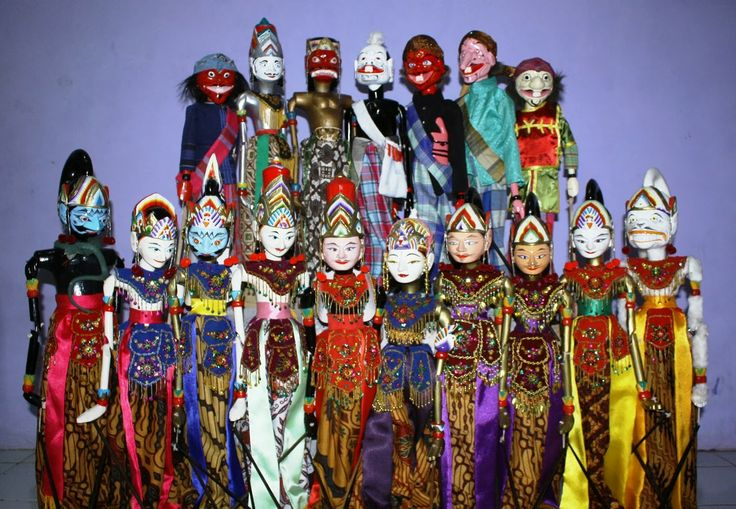
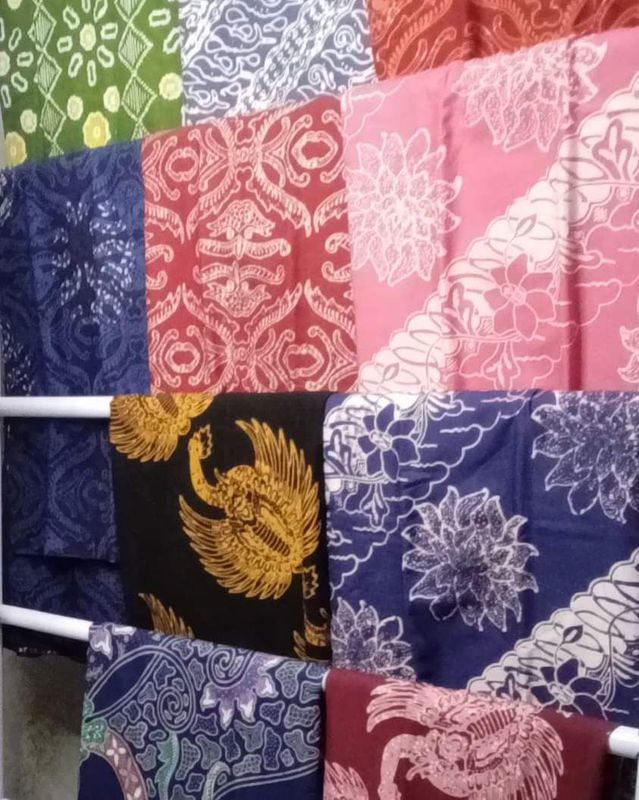
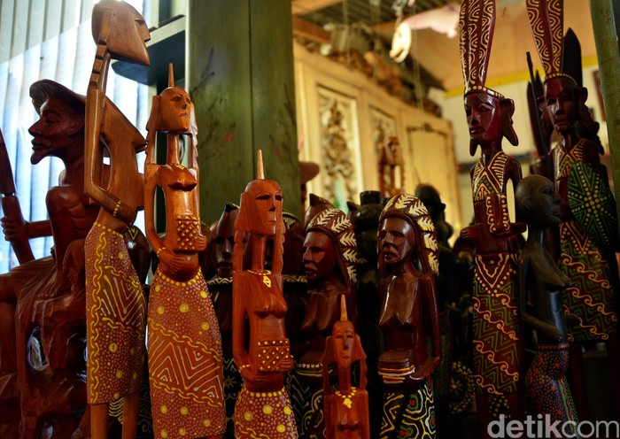
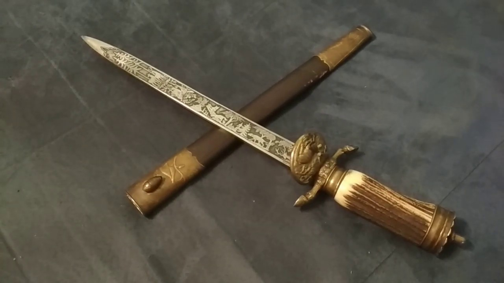

Sejarah: Wayang Golek di Sumedang memiliki pengaruh kuat dari tradisi kesultanan. Dibuat dari kayu albasiah atau lame, seni ini bukan sekadar pajangan, melainkan media dakwah dan kritik sosial sejak masa kerajaan.

Sejarah: Motifnya terinspirasi dari peninggalan Kerajaan Sumedang Larang seperti mahkota Binokasih. Setiap garis dan warna memiliki filosofi kedalaman budaya sunda yang terjaga hingga sekarang.

Penjelasan: Keahlian memahat kayu di Sumedang sudah ada sejak zaman kolonial. Pengrajin lokal memanfaatkan limbah kayu jati atau mahoni untuk membuat miniatur, perabot, hingga hiasan dinding yang sangat detail.

Sejarah: Dikenal sebagai senjata khas dari daerah Cikeruh, Jatinangor. Gobang ini sangat melegenda karena kualitas baja dan proses penempaan yang dilakukan secara tradisional oleh pandai besi ahli turun-temurun.